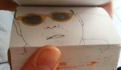

Green text?
'Gangnam Style' is dead. But guess what? Babies are bringing it back! Especially this baby, Amaya, who can apparently sleep through various music medleys but when Psy comes on, she's just gotta shake it. SEE ALSO: 2-Year-Old Dancing Sensation Is a Yo...

By now, Gangnam Style fatigue has turned into complete exhaustion. With more than 1.2 billion views and dozens of parodies, the most-watched YouTube video of all time may now be considered the most annoying. But a new version of Psy's electronic-danc...
By now, Gangnam Style fatigue has turned into complete exhaustion. With more than 1.2 billion views and dozens of parodies, the most-watched YouTube video of all time may now be considered the most annoying. But a new version of Psy's electronic-danc...
Psy closed out his billion view 2012 with a rowdy performance of "Gangnam Style" in Times Square in front of a million New Year's Eve revelers.